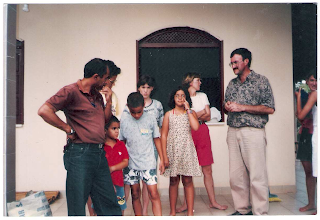
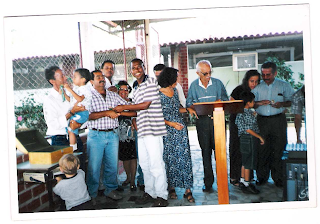

Seja Bem Vindo
Em 05 de Junho de 1994 – a congregação começou a se reunir na residência da irmã Ana Cristina dos Santos, no Condomínio Jardim América, na Av. Adélia Franco, onde foi realizada a primeira EBD, que contou com as seguintes pessoas: Pr. Edinísio de Assis, Dayse Vespasiano de Assis, Enaura Vespasiano de Assis, Edinísio Vespasiano de Assis, Elton Vespasiano de Assis, Ana Cristina dos Santos, Fátima Amorim, Adeline Amorim, Alane Amorim e Felipe Amorim.

Em 15 de janeiro de1995 – transferência da Congregação para o Centro de Educação Especial “João Cardoso Nascimento Júnior”, no Grageru.
1996 – Ocorre a transferência da congregação para o Colégio Americano Batista, passando a ser chamada de Congregação Batista Nova Saneamento. Naquela ocasião a congregação passou a ser apoiada pela Primeira Igreja Batista de Aracaju.

Em 2001 – organização da Igreja Batista Alvorada, em 20 de outubro, com 34 membros fundadores.
2005 – Acontece aquisição do prédio em construção à Av. Dr. Edézio Vieira de Melo, 2196, Pereira Lobo, Aracaju, hoje atual sede de nossa igreja, e em 15 de outubro de 2006 após aquisição – a mudança da igreja Batista Alvorada para nossa atual sede.
Vejam mais informações em nosso perfil no Instagram.